機能ガイド 10/12 · 2026年11月14日更新
作品フォルダとGitで管理する
sb3-toolchainで展開した作品フォルダを直接開いて保存し、Gitの変更・差分・履歴をEditorの中で確かめます。公開 PR は接続なしで比較できます。GitHub 接続を用意した Editor では、同期や非公開 PR の確認もできます。
図版は 2026年11月14日時点の公開版 Editor の画面全体です。作品とリポジトリは説明用の架空のものです。画像を選ぶと原寸で開けます。
10.1 sb3-toolchainで作品と拡張を管理する
sb3-toolchain は手元で使うNode.jsのツールです。import でSB3を作品データ・素材・埋め込み拡張に展開し、Gitで変更を確認できます。check で展開したデータを検証し、build で配布用のSB3を生成します。展開した作品フォルダは、Plus Editorで直接開いて編集することもできます（「作品フォルダを開いて保存する」）。
作品を展開する
作品データ・素材・個別の拡張
必要に応じて拡張を一つにまとめる
- 拡張のメタデータを管理する。 拡張コードのヘッダーに書いた名前、説明、サンドボックスの要件をバンドル時に読み取ります。GitHubのコミットやnpmのバージョンを固定し、埋め込むコードのSHA-256を検証できます。更新時はAPIマニフェストを使って互換性を調べることもできます。
- 複数の拡張を一つにまとめる。 元のコードを残したまま、配布するSB3に複数の拡張を一つの複合拡張として埋め込めます。実行許可は複合拡張全体に対して判断します。
- 公式カタログの信頼条件を確認する。 公開版のPlus Editorでは、TurboWarp Plusファミリー公式カタログの条件を満たす拡張を信頼済みとして扱います。エディターはカタログに載っている取得元やコードのSHA-256を照合してから、個別の承認画面を省略します。
SB3の展開・再生成 · 拡張のバンドル · 公式カタログ
10.2 作品フォルダを開いて保存する
sb3-toolchain v1で展開した作品フォルダを、SB3にまとめ直さずに開いて保存できます。ブラウザーでフォルダを選んで書き込むには、File System Access に対応した Chrome や Edge が必要です。
新規作品や SB3 を開いているときは、画面左上の「プロジェクトフォルダ」ボタンでパネルを開き、「プロジェクトフォルダを作成」を押して保存先のフォルダを選びます。空でないフォルダを選ぶと、中身を上書きしてよいかを確かめる画面が出ます。作成が終わると、そのフォルダのファイルがパネルに表示され、以後の保存はそのフォルダに書き込みます。
作品フォルダを開く
「ファイル」→「プロジェクトフォルダを開く…」を選び、作品フォルダを選んで読み書きを許可します。作品データとローカルの画像・音声が読み込まれます。
システムフォントと Web フォントの参照は作品データに、ファイルのフォントは assets/ に保存します。
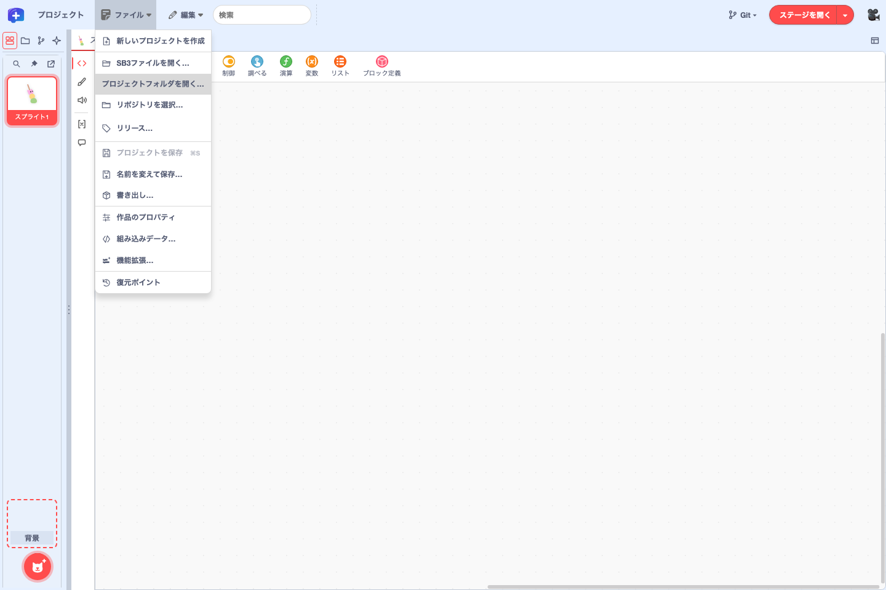
作品フォルダに保存する
- ブロック、変数・リスト、スプライトやコスチューム、スプライトの位置や大きさなどを編集します。作品を実行して変わった位置や変数の値も保存の対象です。
- 「ファイル」→「プロジェクトを保存」を選ぶと、フォルダ内の
project.source.jsonが更新されます。保存前に、フォルダが外部で変更されていないかを確かめます。
スプライトの追加・削除・名前の変更と、コスチューム・音の追加・削除も保存します。このとき、フォルダ内の assets/ と sb3-source.json も更新し、使われなくなった画像・音声のファイルを消します。
埋め込み拡張や、URL で読み込むカスタム拡張を含む作品も開いて保存できます。拡張のコードは extensions/ と embedded-extensions.json に書き戻します。拡張を差し替えて出どころの記録（source）が外れたときは、保存時に知らせます。
作品フォルダのファイルと Git 状態を見る
画面左上の「プロジェクトフォルダ」ボタンで「作品フォルダ」パネルを開きます。ファイル名の下には、作品データ、コスチュームと音、拡張など、ファイルの用途が表示されます。
*はエディターで編集中の内容が未保存であることを示します。ファイル名の後ろに半角スペースを空けて表示し、保存すると消えます。- 太字は、最新コミット（HEAD）と比べて保存済みの内容が変わったファイルや、Git に追加してまだコミットしていない新しいファイルを示します。
- ✨ は、保存済みで Git がまだ追跡していないファイルです。
打ち消し線は、最新コミットにあったファイルが削除されたことを示します。削除したファイルは元のフォルダ内に表示されます。- 保存した内容が最新コミットと一致するファイルは、名前が青になります。追跡先ブランチにも同じ版があれば紫、GitHub の PR のマージ結果に同じ版が入ったことを確認できれば緑になります。
保存済みの内容に変更があり、その上で編集を続けている間は、太字のファイル名に * が付きます。コミットすると、その内容と一致するファイルは通常の太さに戻ります。
ポインターをファイル名に合わせると、状態が文字で表示されます。変更箇所を見るには、ファイルを開いて「差分」に切り替えるか、ローカル Git で対象のファイルを選びます。画像・音声・動画はプレビューで開きます。
パネル右上のボタンで、ファイルの検索、ドロワーの固定、別ウィンドウへの切り離しができます。斜線付きのピンは固定を解除した状態です。ファイルやフォルダを右クリックして操作したり、ドラッグして別のフォルダへ移したりもできます。作品が参照する素材や作品フォルダの管理ファイルは、作品の編集画面と保存操作で更新します。
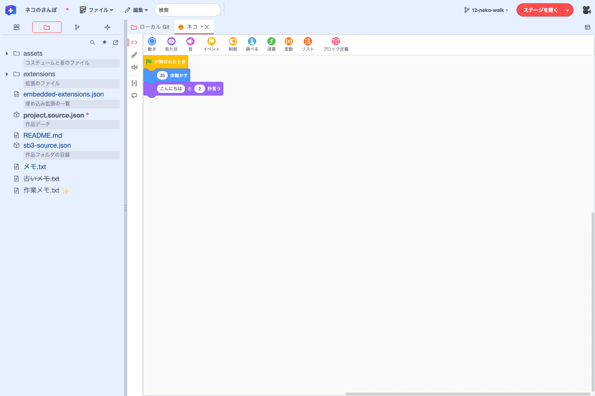
project.source.json に付いた * は未保存の編集、太字はディスクに保存した内容が最新コミットと異なることを示します。青い名前のファイルはコミットと一致しています。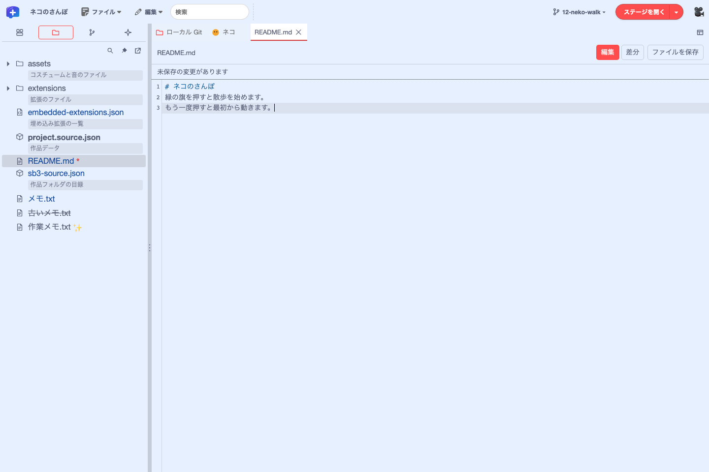
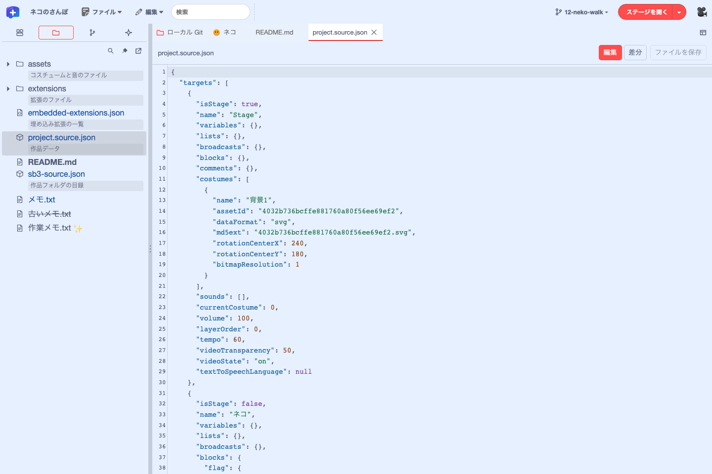
SB3 を作品フォルダに展開するには、Project Starter も使えます。 作品を GitHub に置く
10.3 ローカルGitで変更と履歴を確かめる
「ファイル」→「リポジトリを選択…」で、.git を持つリポジトリのルートを選びます。メニューバー右側の「ステージを開く」の左にあるボタンからも操作できます。リポジトリを選ぶ前は「Git ▾」と表示され、「リポジトリを選択…」と「ローカル Git を開く」を選べます。リポジトリを選ぶと、ボタンには現在のブランチ名が表示され、ブランチの切り替え、「新しいブランチ…」、「ローカル Git を開く」を選べます。
「ファイル」→「リリース…」では、npm 公開用のコマンドのコピー、現在のコミットへの GitHub のタグ付け、Packager で書き出した HTML の Pages 公開元への送信ができます。 リリースの手順
1 リポジトリに 1 作品を基本にします。リポジトリの直下、または Project Starter が作る project/ に作品があり、まだ開いていなければ、ローカル Git の上部に「作品を開く」が表示されます。ほかの場所にある作品は「ファイル」→「プロジェクトフォルダを開く…」で開くと、選択中のリポジトリに関連付けられます。作品を開くと、ステージやスプライトごとに変更を確認できます。 リポジトリの構成
ローカル Git の先頭行には「リポジトリ: 名前」が表示されます。その横の「ローカル状態を更新」は Git の状態を読み直します。GitHub 接続を用意した Editor では、ここに「GitHub に接続…」も表示されます。Editor でブランチを切り替えたり pull したりすると、結果の表示に「作品を再読込」が出ます。左に「プロジェクトフォルダ」を表示している間は、フォルダのアイコンが付いた「ローカル Git」タブがタブ列の左端に固定されます。
その下の「ファイルの保存」「保存のコミット」「PRを作成」「マージ」で表示を切り替えます。「ファイルの保存」と「保存のコミット」には対象のファイル数が表示されます。
- ファイルの保存では、左の一覧でファイル名を選ぶと、現在のブランチの最新コミット（HEAD）と未保存の編集内容の差分が右に表示されます。作品のコードはブロックで比べられます。「未保存のファイルを保存」を押すと、編集内容を作品フォルダに書き込みます。
- 保存のコミットでは、保存した内容を HEAD と比べます。追加したファイルや削除したファイルも表示されます。
「保存のコミット」では、変更のあったステージやスプライトが左の一覧の上部に並び、README などは「その他のファイル」に表示されます。コード以外の変更は「そのほかの設定」などの項目に分かれます。項目やファイル名を押すと、右に差分が出ます。作品データや素材をファイル単位で選ぶには「ファイル単位の一覧」を開きます。左下のコミット欄は一覧をスクロールしても表示されたままで、選択件数を確かめてコミットメッセージを入力できます。 保存からコミットまで
「PRを作成」では、「コミットの履歴」と「ローカルブランチ」を確認し、コミットを選んで変更を見られます。ブランチの切り替えと作成もここで行います。GitHub 接続で PR の作成が許可されていれば、反映先を選んで PR を作れます。「マージ」では「PR一覧」から対象を選び、差分やマージの状態を確かめます。
画面左上の「Git 履歴」ボタンでは、選択中のリポジトリのコミットを一覧できます。コミットを選ぶと「ローカル Git」の「PRを作成」が開き、そのコミットの変更が一覧に出ます。ステージ・スプライトやファイルを選ぶと差分を確認できます。
コミットの「⋯」からは、「この版を開く」「ここからブランチを作る…」「コミットの ID をコピー」を選べます。作品フォルダを開いていれば、「この版を開く」で選んだ版を別のプレイヤーで実行できます。編集中の作品はそのまま残り、プレイヤーを閉じると戻れます。
起動 URL に twPlusGitRestoreVersion=1 を指定すると、「⋯」に「この版に戻す…」が加わります。対象の作品ファイルと追加・変更・削除を確かめて「復元してコミット」を押すと、現在のブランチにローカルコミットができます。「作品を再読込」で復元した版を開けます。復元を無効にするには twPlusGitRestoreVersion=0 を指定します（既定は無効）。
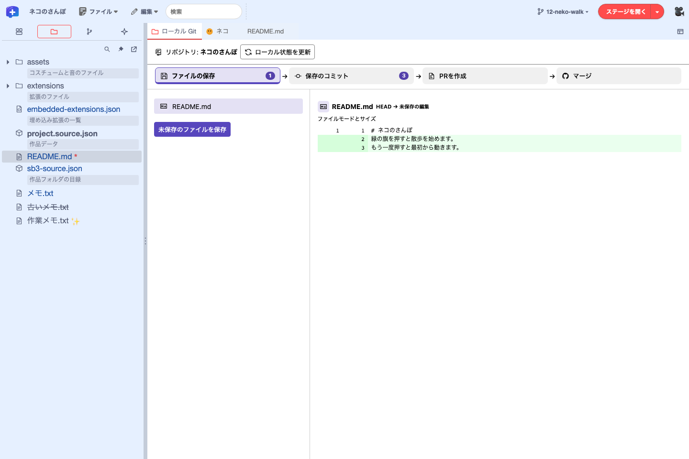
* が消え、README.md が「保存のコミット」の一覧に移ります。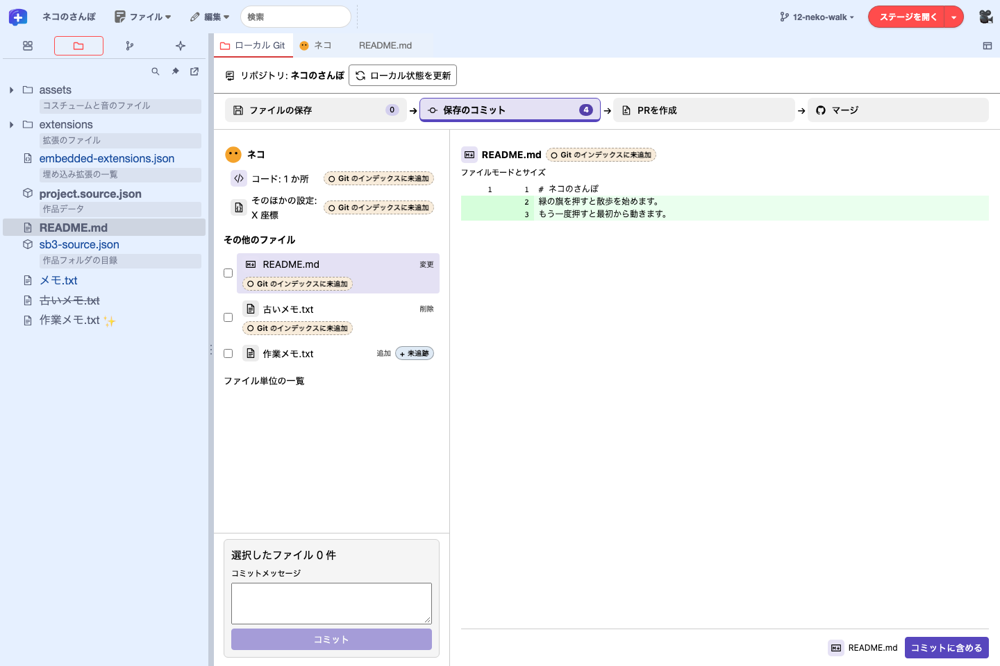
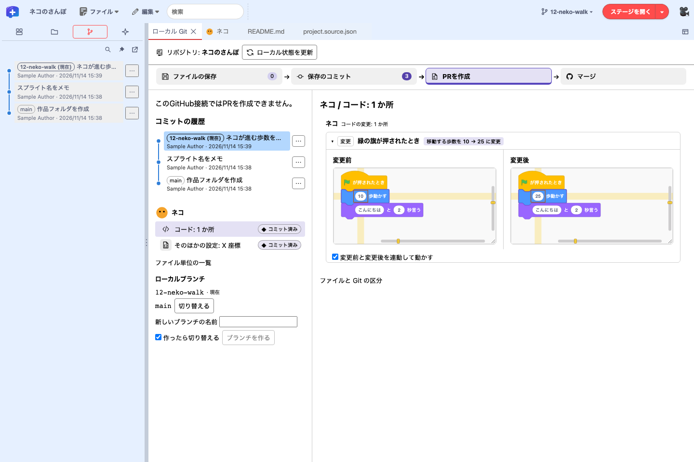
Editor の外で Git を操作したら「ローカル状態を更新」を押します。ブランチの切り替えや pull の後は「作品を再読込」で、その版の作品を開きます。
ブラウザー版には File System Access 対応の Chromium 系ブラウザーが必要です。linked worktree、サブモジュール、シンボリックリンクは対象外で、作業ツリーの実行権限の変更はブラウザーからは確認できません。ローカル Git を使わない場合は起動 URL に twPlusLocalGit=0 を指定します。このときメニューバーの「Git ▾」ボタンと「Git 履歴」ボタンも表示されません。
10.4 作品の変更をブロックで比べる
「保存のコミット」で対象のステージやスプライトの「コード」を選ぶと、作品データ（project.source.json）の差分をスクリプト単位で表示します。「テキスト」に切り替えると、JSON の行単位の差分を確認できます。
- 変更のあったスクリプトだけを比較項目にし、変更前と変更後のブロックを並べて表示します。追加・削除・入力値の変更などには注釈が付き、変更された入力欄やフィールドはオレンジの枠で示します。
- 「元のスクリプト内で強調」を選ぶと、つながったスクリプトの中で変更箇所を確認できます。
- 分割・結合したスクリプトも、両方の版に共通するブロックを手がかりに一つの項目にまとめます。
- 変数、リスト、コスチューム・背景、音、モニターなど、スクリプト以外の変更は別に示します。
黄色い縦横の帯とスクロールバーの目印で、変更箇所の位置が分かります。ポインターを帯の横位置や高さに合わせると、対応する帯が濃くなります。
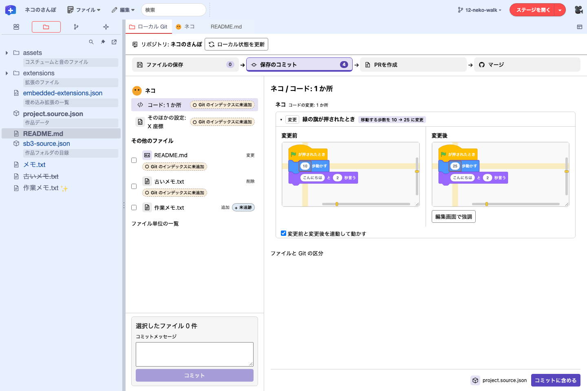
Editor に定義がない拡張ブロックは、名前とつながりが分かる代替ブロックで示します。拡張のコードを取得したり実行したりはしません。
10.5 GitHubと同期する（fetch・pull・push）
メニューバー左端の Plus ロゴから「GitHub 接続設定…」を開き、接続に使う既定の方式を選びます。設定はブラウザーに保存され、作品やリポジトリを開く前にも変更できます。変更は次の接続から使われ、接続中のセッションはそのまま続きます。
リポジトリごとの認証は、ローカル Git の先頭行にある「GitHub に接続…」で行います。接続先（選んだリポジトリの GitHub HTTPS リモート origin）を確認して認証し、必要に応じて push や PR レビューの送信を許可します。接続の確認と切断もここで行います。接続すると「PRを作成」と「マージ」に「GitHub と同期」の欄が表示され、pull と push の対象となる現在のローカルブランチと、確認できた同期状況が並びます。
| 操作 | 公開 Pages 版 | 接続を設定した Web 版・対応 Desktop |
|---|---|---|
| ローカルの差分・コミット | 接続なしで操作 | 接続なしで操作 |
| fetch・pull・push | GitHub Desktop または Git を使う | 選んだリポジトリに接続。push は接続時に許可する |
| PR の比較・実行 | 公開 PR の差分を表示。非公開 PR は GitHub で開く。動作確認には検査で作った SB3 を使える | 接続したリポジトリの公開・非公開 PR の差分を表示し、比較した版を手元で実行できる |
| PR の作成・マージ | GitHub で操作 | 公開操作とマージを許可した接続を使う |
| レビューの送信 | GitHub の PR 画面から送信 | レビュー送信を許可し、対応する GitHub API を有効にした接続を使う |
公開 Pages 版では、「GitHub 接続設定…」を開くと「GitHub 接続先が設定されていません。」と表示され、ローカル Git に「GitHub に接続…」は出ません。接続できない環境でも、外部の Git と GitHub の画面で同期とレビューを続けられます。 接続がない場合の手順
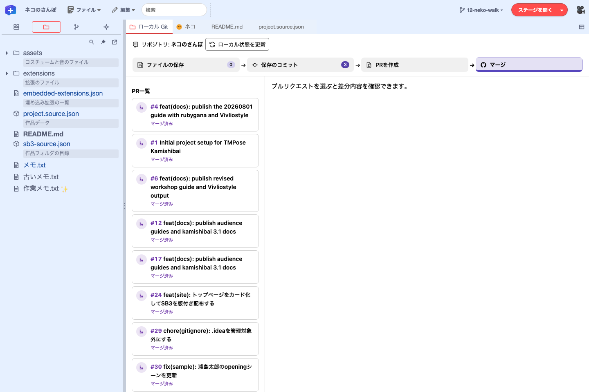
| 操作 | 場所 | 更新するもの |
|---|---|---|
| ローカル状態を更新 | リポジトリ名の横 | 手元のファイル、コミット、ブランチの状態を読み直します。 |
| リモートの情報を更新（fetch） | 「GitHub と同期」の欄 | GitHub 上のブランチ情報とコミットを取得します。手元のブランチやファイルの内容はそのままです。 |
| 手元のブランチとファイルを更新（pull） | 「GitHub と同期」の欄 | GitHub の変更を手元のブランチとファイルに反映します。必要なら「作品を再読込」で作品を開き直します。 |
| GitHubからPR情報を読み直す | 選択した PR のタイトルの横 | PR 一覧と選択中の PR の差分を取得し直します。接続先が対応していれば CI とマージ可否も更新します。 |
接続方式を選ぶ
| 方式 | 設定と認証 |
|---|---|
| ブラウザー版（Cloudflare） | 接続先を設定してビルドした Web 版で、運用者の GitHub App を認可します。トークンは運用者のサーバーで暗号化して保管され、ログインは最長 8 時間です |
| Desktop の GitHub App | App の client ID を設定した Desktop で、Editor に表示されたデバイスコードを GitHub に入力します |
| Desktop の fine-grained PAT | 対応する同梱版で選べます。GitHub で対象リポジトリを選び、Contents の読み取り（push には読み書き）を許可したトークンを Desktop の入力画面に入れます。保存を選べる環境では OS の保護機能で暗号化します |
| Desktop の Git credential helper | 対応する同梱版で、対象リポジトリに適用される helper の認証情報を使います。GitHub アカウント名を入力し、Desktop の確認画面で同意します |
PAT と credential helper は client ID なしで使うための方式です。Desktop 本体と同梱 Editor の両方が対応しているときに選べます。PAT と credential helper の選択肢は Editor の a8dac95 で追加されました。Desktop の同梱版は配布物のビルド情報で確認できます。 Desktop の固定リビジョン · Editor 側の対応
GitHub App をインストールして認可する
- 運用者から案内された GitHub App のページで「Install」を押します。インストール先のアカウントを選び、組織で必要な場合は管理者に承認を依頼します。
- 「Only select repositories」で Editor から使うリポジトリを選びます。同期には Contents の権限、レビュー送信には Pull requests の書き込み権限も確認します。
- ローカル Git の「GitHub に接続…」で、対象リポジトリと必要な許可を確認します。GitHub の認可画面では App 名と権限を確かめ、自分の Editor に表示されたデバイスコードだけを入力します。
- 利用を終えたら Editor で接続を切ります。GitHub の「Settings」→「Applications」で、インストールは「Installed GitHub Apps」、認可は「Authorized GitHub Apps」から取り消せます。
App に権限が追加されたときは、「Installed GitHub Apps」でインストール先の承認を済ませます。GitHub App のトークンは Cloudflare のサーバーまたは Desktop のメインプロセスが保持します。Editor の Git パネルは、対象リポジトリと操作を限定した短時間のプロキシ用の鍵で通信します。 接続先運用者向けの GitHub App 設定
接続したリポジトリを同期する
- fetch。 「リモートの情報を更新（fetch）」で、リモートのブランチとコミットを取得します。
- pull。 作品の実行を止め、未保存の編集と作業ツリーの変更を片づけてから「手元のブランチとファイルを更新（pull）」を押します。fast-forward できる場合に取り込み、「作品を再読込」で開き直せます。
- push。 接続時に push を許可し、「現在のブランチを送る（push）」を押します。結果が不明なら、再送する前に fetch でリモートのブランチを確かめます。
10.6 プルリクエストをスクリプト単位でレビューする
GitHub のプルリクエスト（PR）を、変更全体の概要から個々のスクリプトまで確認できます。図版は、GitHub 接続のない公開版の「マージ」で公開 PR を開いた例です。 turbowarp-kamishibai-app の PR #219
- PR を選ぶ。 対象リポジトリを選んで「マージ」を開き、左の「PR一覧」から対象を選びます。一覧が長いときは「前のページ」「次のページ」で移動します。各行の状態ラベルで、マージ可能、競合あり、ドラフト、マージ済み、クローズ済みなどを確認できます。GitHub 接続で CI の状態を取得できる場合は、その結果も表示されます。
- 変更概要を確認する。 右側の「概要」で PR の説明とマージ状況を確認します。「コミット」には対象のコミットが並び、「チェック」では CI の状態と、取得できる場合はチェックごとの結果を確認できます。
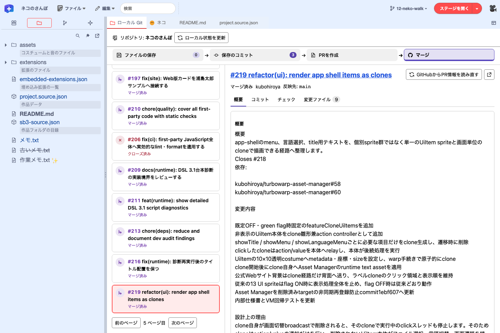
PR を選ぶと、右側に「概要」が開きます。上部のタブで「コミット」「チェック」「変更ファイル」に切り替えられます。 - コミットとチェックを見る。 「コミット」にはメッセージ、作者、コミット ID が表示されます。「チェック」では PR の先端コミットで実行されたチェックの結果を確認できます。
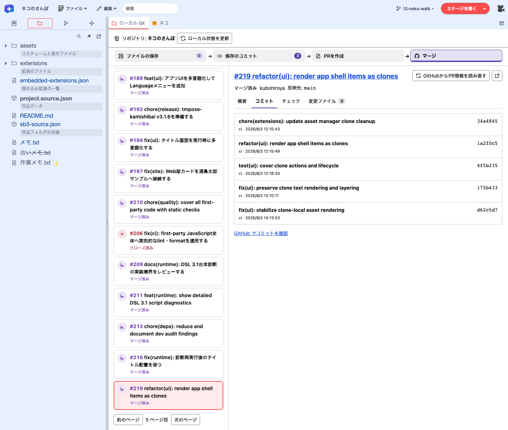
「コミット」では、この PR のコミットを確認できます。下のリンクから GitHub でも確認できます。 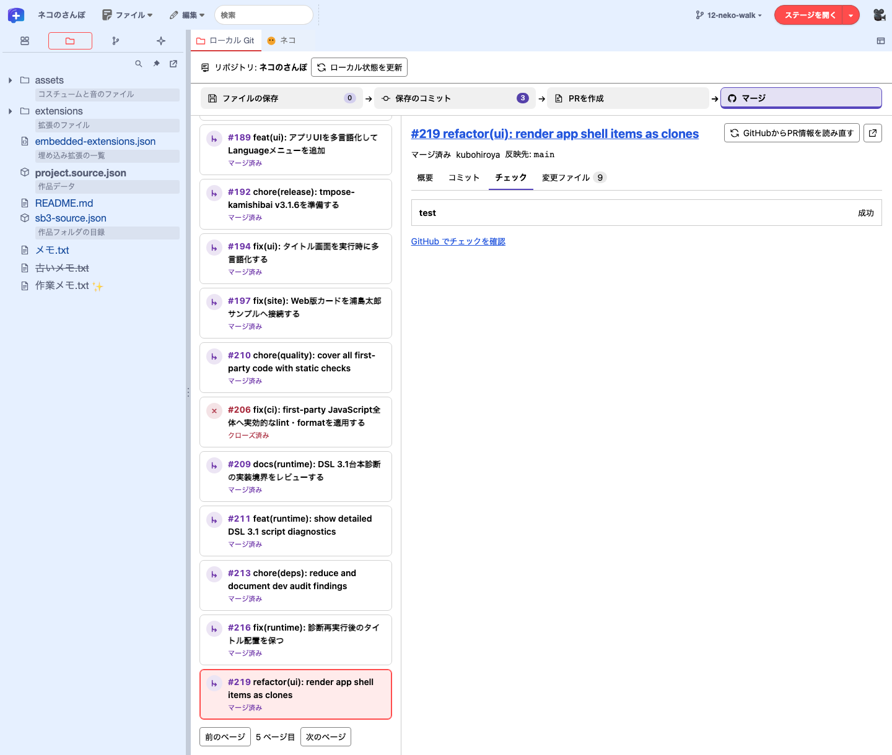
「チェック」で PR #219 のチェック結果を確認したところ。詳細は「GitHub でチェックを確認」から開けます。 - スクリプトをブロックで比較する。 件数が付いた「変更ファイル」タブを開きます。上部の「変更レビュー」で、影響するステージ・スプライトの数、コードの変更の数、確認済みの数が分かります。
project.source.json（この例ではapp/project.source.json）のカードで対象のステージやスプライトの見出しを探し、その下に並ぶスクリプトから、例の「緑の旗が押されたとき」を展開します。左の「変更前」と右の「変更後」を見比べ、枠で示されたブロックがスクリプトのどこにあるかを確かめます。長いスクリプトや横に広いブロックは、比較枠をスクロールして確認できます。比較枠にポインターを重ねると、右下にミニマップと拡大・縮小ボタンが表示されます。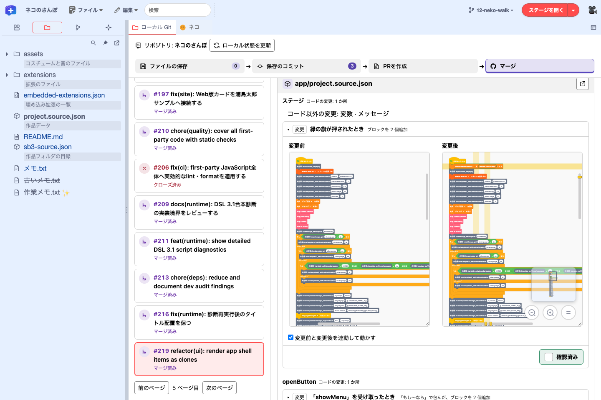
PR のスクリプトを開くと、変更前と変更後が並びます。枠の右下からズームや表示位置の変更ができ、読み終えたら「確認済み」を付けられます。


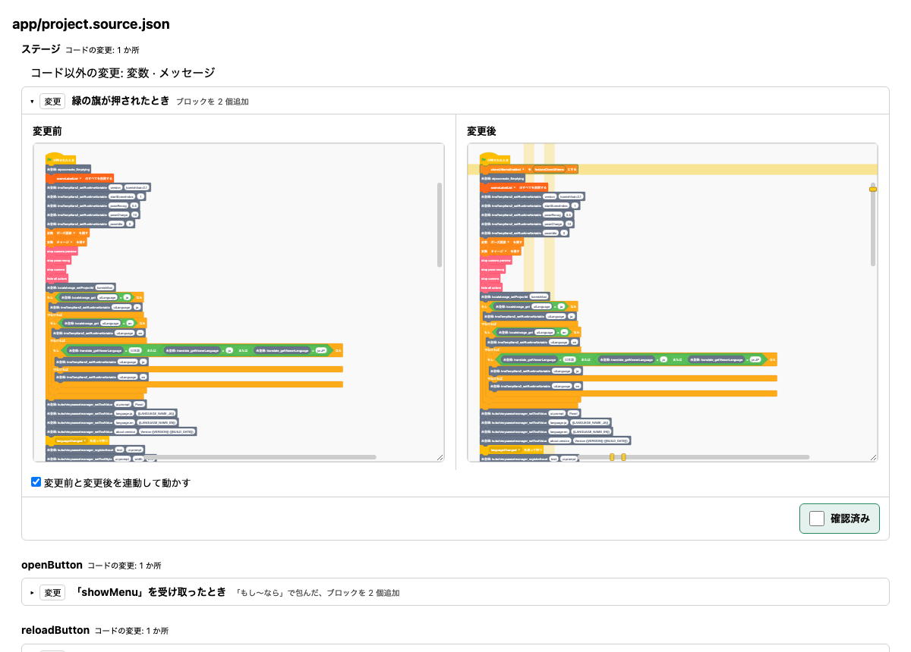
比較を読み終えたら、スクリプトの比較枠の右下にある緑色の「確認済み」で進み具合を記録できます。この印はブラウザーに保存され、パネルを閉じても Editor を再読み込みしても残ります。PR が更新されると、内容が変わったスクリプトの印だけが外れます。印は作品ファイルにも Git にも書き込まれません。手元の差分に戻るには「保存のコミット」を選びます。
比較には PR のマージベースと head を使います。未接続時は公開 API で公開 PR を比較できます。接続中は許可された非公開リポジトリの PR も一覧から選べます。PR の head とベースのブランチを Git Smart HTTP で取得して比較します。PR の反映先を取得できない場合は、GitHub 側の既定ブランチを使います。候補が複数あるときは、比較先のブランチを選べます。メニューバーのブランチのボタンは、手元で編集するブランチを切り替える操作です。右ペインの PR 番号とタイトルから GitHub の PR を開けます。PR 見出しの右上にある「差分をエディタのタブで開く」アイコンを押すと、作品の差分が Editor の別タブで開きます。変更ファイルのカード右上にある「別ウィンドウで開く」を押すと、そのファイルのブロック差分を別ウィンドウで確認できます。「確認済み」は元の PR 画面にも反映されます。比較の仕組みは作品の変更をブロックで比べるで説明しています。
PR の版を実行するには、作品フォルダを開いておき、GitHub に接続した状態で開いた PR の「PRの作品を開いて動作確認」を選びます。比較したコミットにローカルブランチ（例 pr/42）を作って切り替え、その版の作品を開き直します。作品の実行中、未保存の編集や作業ツリーの変更があるとき、同名のブランチが別のコミットを指しているときは、切り替えずに止まります。確認を終えたら、メニューバーのブランチ名から元のブランチに切り替え、「作品を再読込」を選びます。確認用のブランチは手元に残ります。
レビューを送信する
「確認済み」は自分の確認状況を示す印です。GitHub にレビューを送信するには、接続時に「レビューの送信を許可する」を選んでから、PR を開きます。接続先でレビュー用 GitHub API が有効で、リポジトリでレビューを送れる権限が必要です。
「レビューを送る」で全体とコードへのコメントを確認し、結果に「コメント」「承認」「修正を依頼」のいずれかを選び、「レビューを送信」を押します。コードへのコメントをスレッドにできるか、本文に入るかは送信前の表示で確認できます。送信欄を使えない場合は GitHub の PR を開き、「Files changed」からレビューします。 検査・レビュー・マージの手順
接続先の運用者は Cloudflare の GIT_GITHUB_API、Desktop の TW_PLUS_DESKTOP_GIT_GITHUB_API で API のグループを有効にします。review-threads は差分の位置に付けるコメントを扱い、reviews-body は本文だけのレビュー送信に使えます。Desktop の API は既定で無効です。 API の設定 · レビュー送信の検証状況